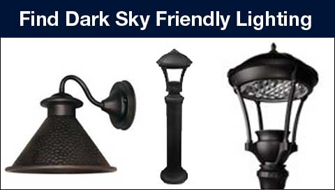

The International Dark-Sky Association is the authoritative voice on light pollution. IDA educates lighting designers, manufacturers, technical committees and the public about controlling light pollution. We recognize that the best way to accomplish our goal of protecting and restoring our natural night environment is through the promotion of quality outdoor lighting. To achieve this, we developed the Fixture Seal of Approval program to provide objective, third-party certification for lighting that minimizes glare, reduces light trespass and doesn’t pollute the night sky.
Find Dark Sky Friendly Lighting
We do not sell lighting. To find fixtures that have been certified as dark sky friendly browse our FSA Database. To find retailers that sell good lighting, see our Dark Sky Retailers page.
Statement on CCT & Short Wavelength (Blue light)
With the advent of the LED, We are concerned about the potential negative effects of blue-rich white light, even from fixtures with proper shielding. In 2010, IDA published a white paper outlining the potential hazards of blue-rich white light sources. Since then the scientific evidence has solidified around its conclusions.
The case against blue light is well founded with regard to discomfort, glare, circadian rhythm disruption, light scattering, skyglow and biological system disruption in wildlife. Outdoor lighting with high blue light content is more likely to contribute to light pollution because it has a significantly larger geographic reach than lighting with less blue light. In natural settings, blue light at night has been shown to adversely affect wildlife behavior and reproduction. This is true even in cities, which are often stopover points for migratory species.
In 2014, the FSA program began requiring lighting that has a “correlated color temperature” CCT of 3,000 and lower (up to 3220K actual measured value – ANSI C78.377).
However, with the rapid pace of technological advances we are witnessing in the lighting industry, we expect the time will arrive when IDA will reduce its CCT recommendation to 2,700K or lower. IDA seeks the best possible scenario for new LED installations and retrofits to replace old technology without increasing light output and minimizing short wavelength emission while also decreasing operational costs and energy consumption
We promote environmentally responsible outdoor lighting and supports the research, development, and adoption of new technologies and encourage the lighting industry to continue the march toward lower CCT lighting products with less short- wavelength emission.
